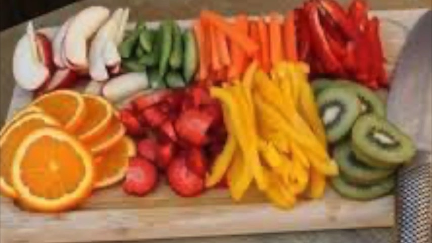

Home · Module 8 · Nutrition & Gut HealthModule 8 · Nutrition et santé intestinale
Module 8 · Nutrition & Gut HealthModule 8 · Nutrition et santé intestinaleFeed the Need: Nutrition OverviewNourrir le besoin : aperçu de la nutrition
Welcome to Module 8! What you eat is one of the most powerful tools you have. Start by listening to Christine, then read the short overview below on the nutrient most of us don’t get nearly enough of: fibre.

Why fibre matters
This overview is inspired by Dr. Will Bulsiewicz, MD, a gut health expert (“Dr. B”).
Most people massively under-eat fibre, and it shows up as bloating, constipation, inflammation, poor blood sugar control, weaker immunity — and yes, crappy sleep. Dr. B’s message is simple: feed your gut bugs consistently and gently with plants.
Fibre is not just about “being regular.” It is about:
- Feeding beneficial gut bacteria
- Reducing inflammation
- Improving insulin sensitivity (how well your body handles blood sugar)
- Supporting immune function
- Regulating appetite and weight
- Producing protective fatty acids
Dr. B’s three no-drama rules
Start low, go slow
Increase your fibre gradually over 2–4 weeks.
Diversity beats perfection
Aim for 20–30 different plant foods per week: fruits, veggies, beans, whole grains, nuts, seeds, herbs and spices.
Whole foods first
Supplements are optional. Real plants are mandatory.
Good to know
Easy ways to add fibre at breakfast, lunch and dinner — plus why kiwi is a gut and sleep powerhouse — are in the Gut Health: Fibre lesson at the end of this module.
Talk to your care team
This lesson is for education only and isn’t medical advice. Check with your doctor, neurologist or pharmacist before starting a supplement or making a big change to your diet or medication.
Your action this week
Count how many different plant foods you eat this week. Then add one or two new ones next week — slowly working toward 20–30.
Bienvenue au module 8! Ce que vous mangez est l’un des outils les plus puissants à votre portée. Commencez par écouter Christine (en anglais), puis lisez le court survol ci-dessous sur le nutriment que la plupart d’entre nous ne consomment pas assez : les fibres.
Pourquoi les fibres sont importantes
Ce survol s’inspire du Dr Will Bulsiewicz, M.D., un expert en santé intestinale (« Dr B »).
La plupart des gens mangent beaucoup trop peu de fibres, et ça se voit : ballonnements, constipation, inflammation, glycémie mal contrôlée, immunité affaiblie — et oui, un sommeil pourri. Le message du Dr B est simple : nourrissez vos bactéries intestinales avec des végétaux, de façon régulière et en douceur.
Les fibres, ce n’est pas seulement pour « être régulier ». Elles servent à :
- Nourrir les bonnes bactéries de l’intestin
- Réduire l’inflammation
- Améliorer la sensibilité à l’insuline (la façon dont votre corps gère le sucre dans le sang)
- Soutenir le système immunitaire
- Réguler l’appétit et le poids
- Produire des acides gras protecteurs
Les trois règles sans drame du Dr B
Commencez bas, allez-y lentement
Augmentez vos fibres graduellement sur 2 à 4 semaines.
La variété avant la perfection
Visez 20 à 30 aliments végétaux différents par semaine : fruits, légumes, haricots, grains entiers, noix, graines, fines herbes et épices.
Les aliments entiers d’abord
Les suppléments sont facultatifs. Les vrais végétaux sont obligatoires.
Bon à savoir
Des façons simples d’ajouter des fibres au déjeuner, au dîner et au souper — et pourquoi le kiwi est un champion de l’intestin et du sommeil — se trouvent dans la leçon Santé intestinale : les fibres, à la fin de ce module.
Parlez-en à votre équipe de soins
Cette leçon est offerte à titre éducatif seulement et ne remplace pas un avis médical. Consultez votre médecin, votre neurologue ou votre pharmacien avant de commencer un supplément ou de modifier de façon importante votre alimentation ou votre médication.
Votre action de la semaine
Comptez combien d’aliments végétaux différents vous mangez cette semaine. Ajoutez-en ensuite un ou deux nouveaux la semaine prochaine — pour vous rapprocher peu à peu de 20 à 30.